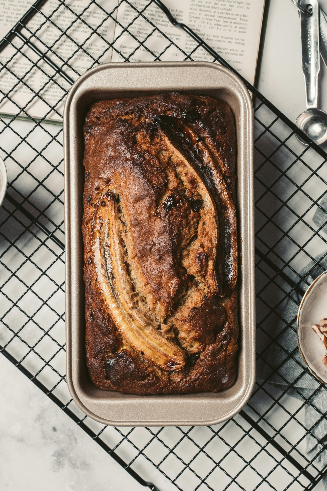

Banana Bread

Description
Rich, chewy, and irresistibly nutty, these Banana Bread are the perfect treat for any occasion. Made with a smooth peanut butter base, layered with a touch of sweetness, and topped with a decadent chocolate glaze, they strike the ideal balance between salty and sweet. Easy to prepare and even easier to enjoy, these bars are a crowd-pleaser—whether served as a quick snack, a lunchbox surprise, or a delightful dessert.
Ingredients
Moist, tender, and bursting with sweet banana flavor, this classic banana bread is the perfect way to turn overripe bananas into something truly delicious. With its soft crumb and rich aroma, every slice feels like a comforting hug. Whether enjoyed plain, with a pat of butter, or paired with a hot cup of coffee, banana bread is a timeless treat that’s easy to bake and loved by all ages. Ideal for breakfast, snacks, or dessert, it’s a recipe you’ll come back to again and again.
- 2 cups all-purpose flour
- 1 teaspoon baking soda
- ¼ teaspoon salt
- ¾ cup brown sugar
- ½ cup butter
- 2 large eggs, beaten
- 2 ⅓ cups mashed overripe bananas
Steps
- Gather all ingredients. Preheat the oven to 350 degrees F (175 degrees C). Lightly grease a 9x5-inch loaf pan.
- Combine flour, baking soda, and salt in a large bowl. Beat brown sugar and butter with an electric mixer in a separate large bowl until smooth. Stir in eggs and mashed bananas until well blended. Stir banana mixture into flour mixture until just combined.
- Pour batter into the prepared loaf pan.
- Bake in the preheated oven until a toothpick inserted into the center comes out clean, about 60 minutes.
- Let bread cool in pan for 10 minutes, then turn out onto a wire rack to cool completely.
- Enjoy!
Home